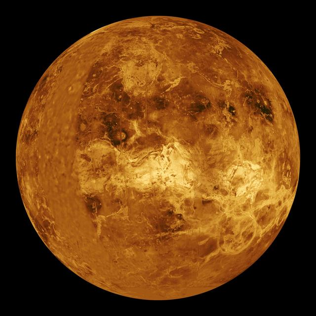
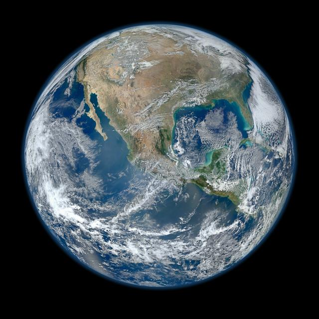
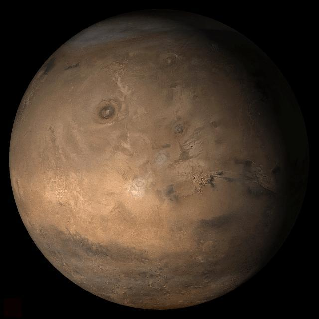

Inner Planets
Mercury, Venus, Earth, and Mars are the four rocky planets closest to the Sun.
Astronomers call them the terrestrial planets. Each has a solid surface and a metal core, and all four are much smaller and denser than the giant planets farther out. They have few or no moons and no rings, and they sit inside the asteroid belt, which separates them from the outer solar system.
Choose a planet below to see its facts, or use the table at the bottom of the page to compare all four.
Choose a Planet
-

Mercury
The smallest planet and the closest to the Sun, with extreme swings between day and night temperatures.
-

Venus
The hottest planet, covered by dense clouds of carbon dioxide and sulfuric acid.
-

Earth
Our home and the only world known to support life, with liquid water across most of its surface.
-

Mars
A cold desert world with the tallest volcano in the solar system, Olympus Mons.